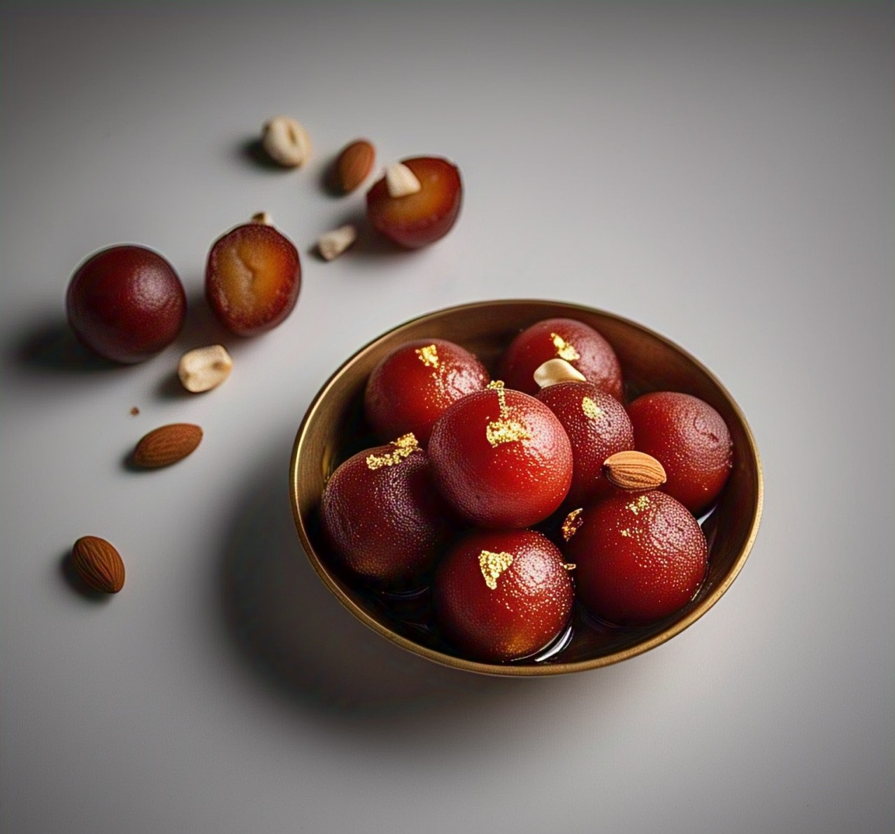

Indulge in sweet and soft Gulab Jamun
Gulab Jamun
Ingredients:
- 1 cup khoya (mawa)
- 1/4 cup all-purpose flour
- 1/4 tsp baking soda
- 2 tbsp milk
- Oil or ghee for frying
- 1 cup sugar
- 1/2 cup water

Recipe:
- Mix khoya, flour, baking soda, and milk to form a soft dough. Make small balls without cracks.
- Heat oil/ghee on low flame and fry the balls until golden brown.
- Prepare sugar syrup by boiling water and sugar.
- Soak fried gulab jamuns in warm syrup for 2 hours before serving.